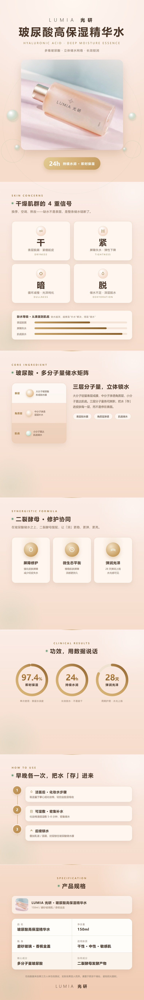
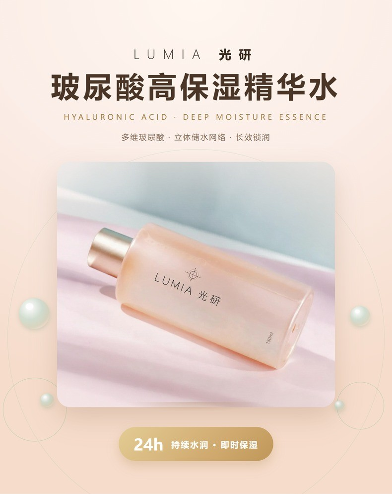
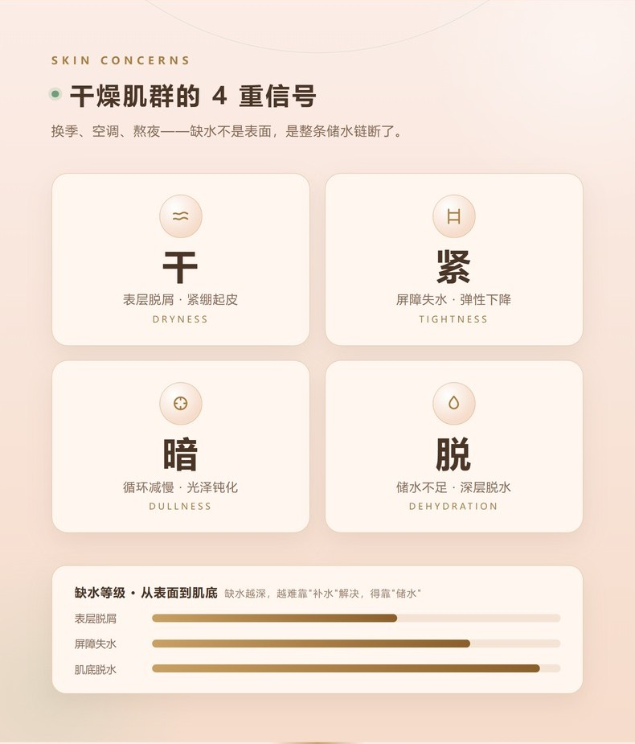
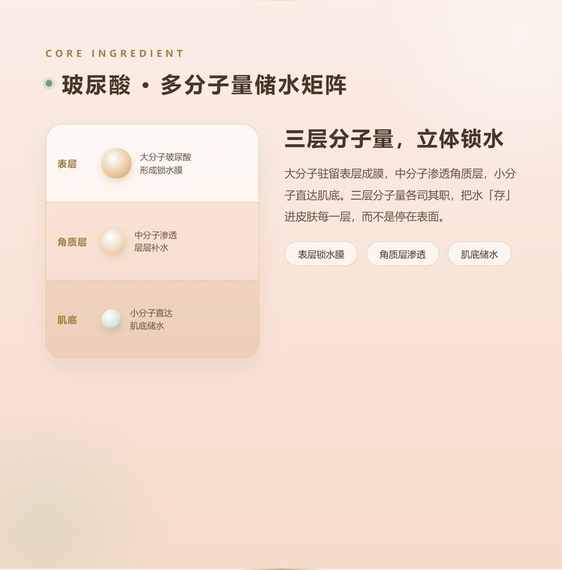
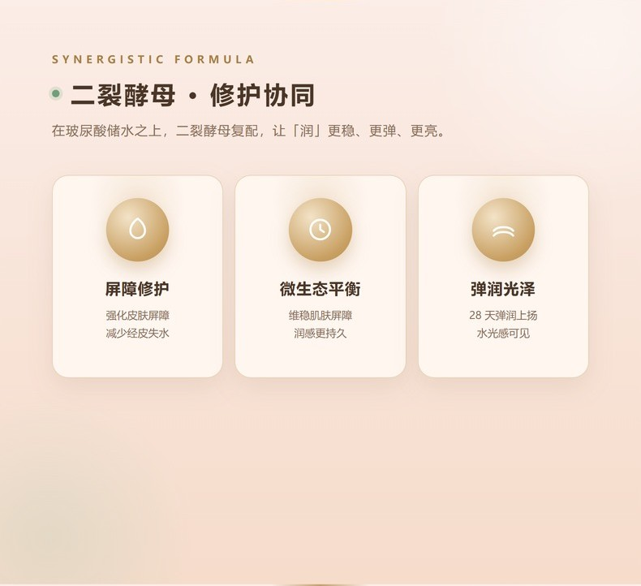
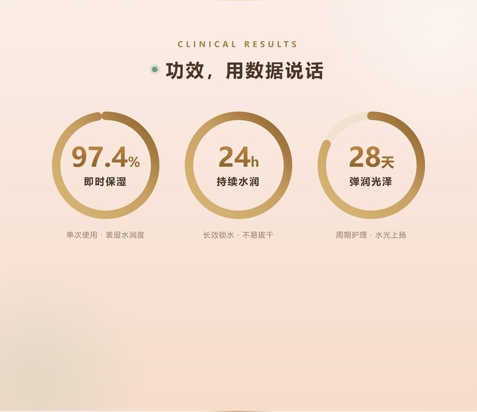
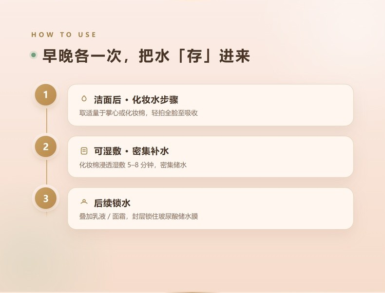
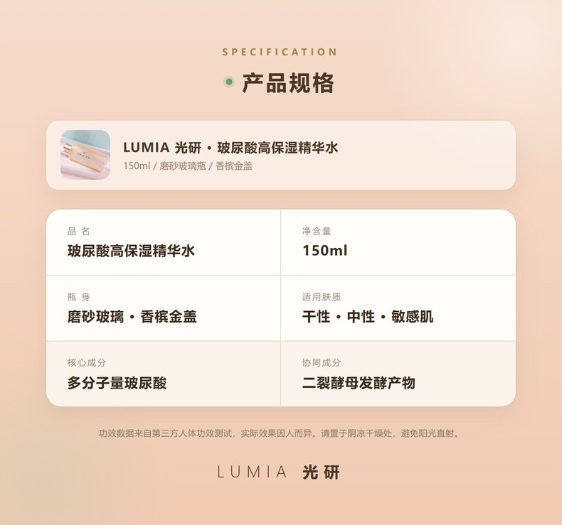
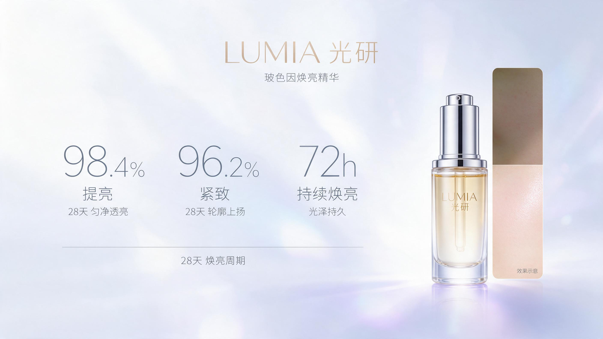
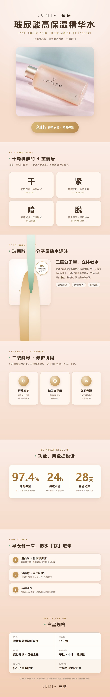

虚构护肤品牌 LUMIA 光研的电商详情页全案：从品牌 KV、卖点拆解、成分工艺、功效数据到规格参数，用一条冷调光感主线贯穿 7 屏长图；以 Design Show 标题页 + 手机 mockup 的专业方式呈现。
参考电商详情页全案的呈现方式：不摊开一张长图，而是把 7 屏长图装进手机 mockup，右侧标注每屏的设计意图。长图可在手机框内滚动查看。

模块顺序不是随手排的：先立品牌，再讲卖点，再给成分与功效证据，最后落到场景与规格——这是我从电商详情页案例里抽出的通用骨架。








| 产品口径 | LUMIA 光研 · 玻尿酸高保湿精华水 / 150ml / 磨砂玻璃瓶 / 香槟金盖 |
|---|---|
| 交付物 | 7 屏竖版详情长图（790×5466）+ 首屏 KV（790×1404）+ 8 模块切图 + 横版功效数据海报（2816×1584） |
| 主色系 | 桃金暖调 #FBEDE7 / #F6DCCB / #C9A063，辅色薄荷 #9FC6A8，墨色 #3A2A1E |
| 字阶 | 大标题（主主张）+ 小注释（13px / letter-spacing 5px 金色眉标），双层结构 |
| 图像生成 | arena.ai SeeDream-5.0-Pro，1:1 产品图 / 16:9 海报 / 竖版长图分屏生成 |
| 排版实现 | HTML + CSS 精确排版（hero_v4.html / detail_v5.html），色彩变量化、模块可复用 |
| 一致性控制 | 三段式锁：SPEC + 固定约束 + 排除项清单，跨镜复用，不依赖 seed 硬碰 |
M1 玻璃瓶精华用冷调蓝紫体现「光研科技」；M2 精华水改用桃金暖调，因为品类从「功效精华」转向「保湿日常」，暖调更贴近使用场景。同一品牌下允许两套视觉体系，但各自必须单主色贯穿。
直接让模型出整张长图，中文与数字容易糊、裁切。改为「单屏出图 + HTML/CSS 精确排版」：图像负责质感，代码负责字阶与网格，中文准确率与数字完整度都可验收。
v2/v3 的旧稿没有丢弃，而是作为「迭代对照」保留。面试时能讲清每一版改了什么、为什么改，比只展示最终稿更能证明设计判断力。
这套提示词结构来自「SPEC + 约束清单 + 排除项」的一致性锁定方法：先把可见特征写具体，再把跨镜不变的条件固定，最后用排除项强制单一主体。
磨砂玻璃瓶身 150ml，香槟金旋盖，瓶身正面印「LUMIA 光研 / Hyaluronic Acid」烫金字样；瓶内淡金透明精华液面位于瓶身 1/3 处；瓶底投下柔和椭圆阴影。主体位于画面正中，占画面高度 62%，基线对齐下三分之一线。
统一影棚底色 #FBEDE7 到 #F6DCCB 的柔和渐变；同一光位：左上 45° 主光 + 右侧微弱补光；同一基线、同一占比；装饰元素限定为水珠与涟漪，位置固定在主体右下与左上；画面无人物、无手部。
只有一个主体瓶，无第二瓶、无重复瓶盖、无多余瓶身；无文字水印、无乱码字符、无变形logo；无多余手指、无人体部位；无杂乱背景、无强反光过曝；不要宽幅横构图（长图用竖版单屏）。
左：早期 v3 版本，信息密度低、主色不统一；右：v5 定稿，模块完整、字阶清晰、单主色贯穿。改动记录见排版源码 detail_v3.html 与 detail_v5.html。
